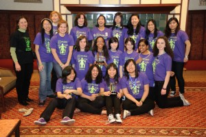

-
Team HistoryIn 2006, some female members of the Sciborgs, Bronx Science's co-ed robotics team, realized that they were mainly being given public relations tasks. They recognized that these roles were assigned to them because they were girls and decided to take initiative. In December 2006, they formed the Fe Maidens. Since its inception, the Fe Maidens has been dedicated to empowering the next generation of female engineers. Through robotics, our members learn essential skills for becoming effective leaders in STEM.
In our 10 years of competing, we have proved that girls are just as competent as their male counterparts. In our rookie season, we won the Rookie All Star Award and we were a quarter finalist. In 2008, we were once again a quarter-finalist. In 2009, we won a website design award. In 2010, we won the NYC regional, an imagery award, and the engineering inspirations award. In 2011, we were a semifinalist. Additionally, one of our members was a Deans List finalist. In 2012, we won an imagery award and were a semi finalist. In 2017, we were a quarter finalist at Hudson valley, a semifinalist at NYC, and we received an imagery award. The team continues to expand its outreach by working with three all-girls Lego Robotics teams: Chapin School, Bronx House SONYC, and Bronx Park Middle School. At the Bronx House Community Center, we worked with underprivileged girls and taught them the fundamentals of Lego robotics.AlumnaeCaptain
Megan Groppe (2020)
Jessica Shannon (2019)
Natasha Stamler (2018)
Charlotte Kavaler (2017)
S. Violet Killy (2016)
Kiana Dyson (2015)
Marsha Ghose (2014)
Sonia Aktar (2013)
Nicole Calace (2012)
Leena Chan (2011)
Qurat-ul-ain Ali (2010)
Qurat-ul-ain Ali (2009)
Jessica Sattinger (2008)
Antoinette Carey (2007)
Alexandra Greenbaum (2007)
Class of 2020
Megan Groppe - Carnegie Mellon University
Nicole Constante - Northwestern University
Tiffany Deane - Princeton University
Alexandra Deli-Ivanov - Columbia University
Alexis Hernandez - Rensselaer Polytechnic Institute
Sumaya Khoshnobish - Brooklyn College
Annabelle Lew - Harvey Mudd College
Meng Ting Li - Cornell University
June Lim - Boston University
Mahjabin Musa - New York University
Lily O Sullivan - Yale University
Bernice Wang - Yale University
Akaneh Wang - Princeton University
Eva Yi Xie - Massachusetts Institute of Technology
Erin Yan - Carnegie Mellon UniversityClass of 2019
Jessica Shannon - Georgetown
Nancy Chen - University of Michigan
Tiffany Chen - Stony Brook University
Flaurencya Ciputra - Yale University
Caroline Hana - Princeton University
Fatiha Kamal - New York University
Megan Ngo - Massachusetts Institute of Technology
Jasmine Um - New York University
Zoe Wong - Massachusetts Institute of Technology
Marisa Wong - University of Michigan
Anna Xu - University of Michigan
Kang Hwu (Esther) Yie - Ecole Polytechnique Fédérale de Lausanne (EPFL Switzerland)
Clara Yu - University of Michigan
Jialin Zhuo - Stanford University
Class of 2018
Natasha Stamler - Massachusetts Institute of Technology
Carol (Tianyu) Shao - University of California, Berkeley
Emily Zhu - New York University
Julie (Chih Yu) Tung - Massachusetts Institute of Technology
Rose Noggle - Worcester Polytechnic Institute
Tanushree Burman - Yale University
Zarrin Ali - Fordham University
Class of 2017
Charlotte Kavaler - Yale University
Alex Ngan - Rensselaer Polytechnic Institute
Alexis Williams - University of Maryland
Carol Zhang - University of Michigan
Celine (Min) Park - Princeton University
Chelsea Wang - Carnegie Mellon University
Eunah Song - Cornell University
Ho Yi Wong - Stony Brook University
Juliette Gerber - Duke University
Karen Nguyen - Massachusetts Institute of Technology
Kathryn Wicks - Massachusetts Institute of Technology
S. Israth Wahid - Rensselaer Polytechnic Institute
Class of 2016
S. Violet Killy - Massachusetts Institute of Technology
Berenice Moog - Syracuse University
Gigi (Zhi Jie) Dong - Worcester Polytechnic Institute
Iris Erlanger - Rensselaer Polytechnic Institute
Jenny Li - Massachusetts Institute of Technology
Luz Jimenez - Cornell University
Risa Parham - University of Michigan
Shazmin Mahmud - Columbia University
Tenzin Ukyab - Massachusetts Institute of Technology
Class of 2015
Kiana Dyson – California Polytechnic State University, San Luis Obispo
Angelika Garcia - City College of New York
Anna Gallo - Rochester Institute of Technology
Ashley Lau – Stanford University
Barbara Zhong - University of Michigan
Breonna Liew - Northeastern University
Cindy Zhuo - University of Michigan
Grace Li - To Be Updated
Hanna He - University of Southern California
Juno Lee – University of Michigan
Justina Ramlakhan - Wheaton College
Mahzabin Hasnath - Columbia University
Rachel Suazo - Cornell University
Sabrina Law - University of Michigan
Sarah Tilatitsky - Stony Brook University
Stella Gomes - New York University
Vicki Long - Carnegie Mellon University
Yunbin Kim - Cornell University
Class of 2014
Marsha Ghose - Stony Brook University
Ashley Hu - New York University
Carrie Wang - University of Pennsylvania
Christina Joseph - Hofstra University
Christine Sison - Columbia University
Ivy Huang - Columbia University
Joana Feng - St. John's University
Makiko Iwasaki - To Be Updated
Nadya Levitova - Rochester Institute of Technology
Nicole (Jihyun) Jung - The Cooper Union for the Advancement of Science and Art
Phoebe Wong - University of Southern California
Sadia Khan - Baruch College
Shella Wu - Brandeis University
Xiayuan Dong- New York University
Class of 2013
Sonia Aktar - St. John's University
Amy Lai - University of Michigan
Amy Liu - Boston University
Christine Lau - Sophie Davis School of Biomedical Education
Dominique Watt - Case Western University
Elaine Zhang - Bowling Green State University
Juliet Eldred - University of Chicago
Juliet Mullan - Carnegie Mellon University and Queens College
Mindy Chen - Cornell University
Class of 2012
Nicole Calace – Cornell University
Francesca Arcidiacono - Carleton College
Miuki Yip - Stony Brook UniversityClass of 2011
Leena Chan - Hunter College
Dara Chen - Smith College
Vicky Chen - New York University
Vivian Wu - Rensselaer Polytechnic Institute
Class of 2010Qurat-ul-ain Ali - City College of New York
Irene Li - St. John's University
Jennifer Silvestre - Columbia University
Joanna Fung - Hunter College
Olivia Hon - SUNY Binghamton University
Sabina Smajlaj - Columbia University
Tiffany Win - Boston University
Xing Jian Tian - Columbia University
Class of 2009
Mina Min - The Cooper Union for the Advancement of Science and Art
Class of 2008
Desiree Phillips - Rensselaer Polytechnic Institute
Jessica Sattinger - City College of New York
Stella Dennig – Tufts University
Class of 2007
Antoinette Carey – SUNY Maritime College
Alexandra Greenbaum – Rensselaer Polytechnic Institute
Gena Rozenberg – Cornell University
Kathleen - SUNY Binghamton University
Ly Ky Tran – Columbia University
Awards2019
NYC Regional - Winner
NYC Regional - Entrepreneurship Award
Hudson Valley Regional - Quarter Finalist
Hudson Valley Regional - Team Spirit Award
2018
NYC Regional - Engineering Inspiration Award
2017
NYC Regional - Semi Finalist
NYC Regional - Imagery Award
Hudson Valley Regional - Quarter Finalist
World Maker Faire - Editor's Choice Blue Ribbon
2016
World Maker Faire - Editor's Choice Blue Ribbon
2012
NYC Regional - Quarter Finalist
NYC Regional - Imagery Award
World Maker Faire - Editor's Choice Blue Ribbon
2011
NYC Regional - Semi Finalist
NYC Regional - Entrepreneurship Award
New Jersey Regional - Dean's List Finalist
2010
NYC Regional - Champion
NYC Regional - Engineering Inspiration Award
New Jersey Regional - Imagery Award
2009
Connecticut Regional - Best Website
2008
NYC Regional - Quarter Finalist
2007
NYC Regional - Rookie All Star Award
NYC Regional - Quarter Finalist